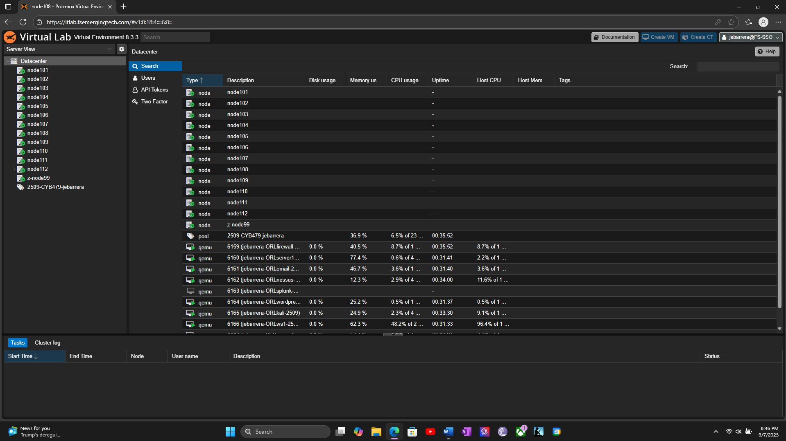
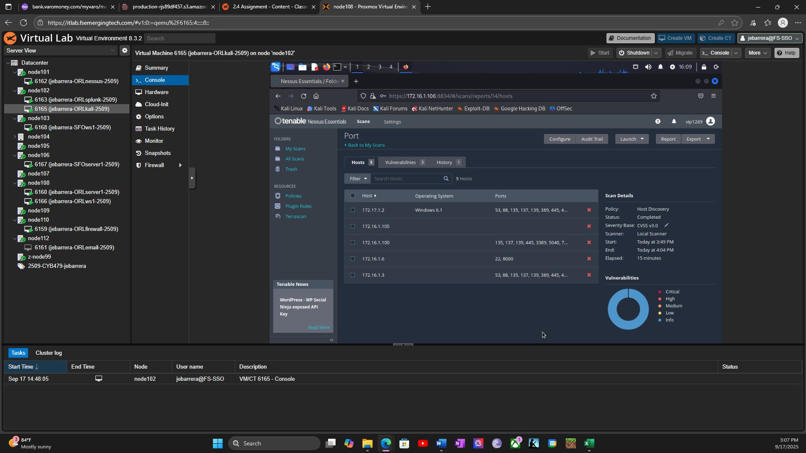
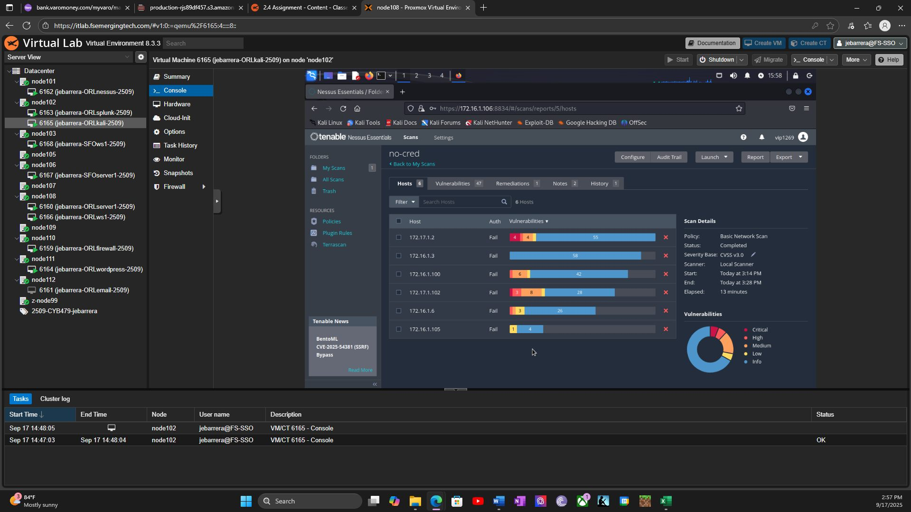
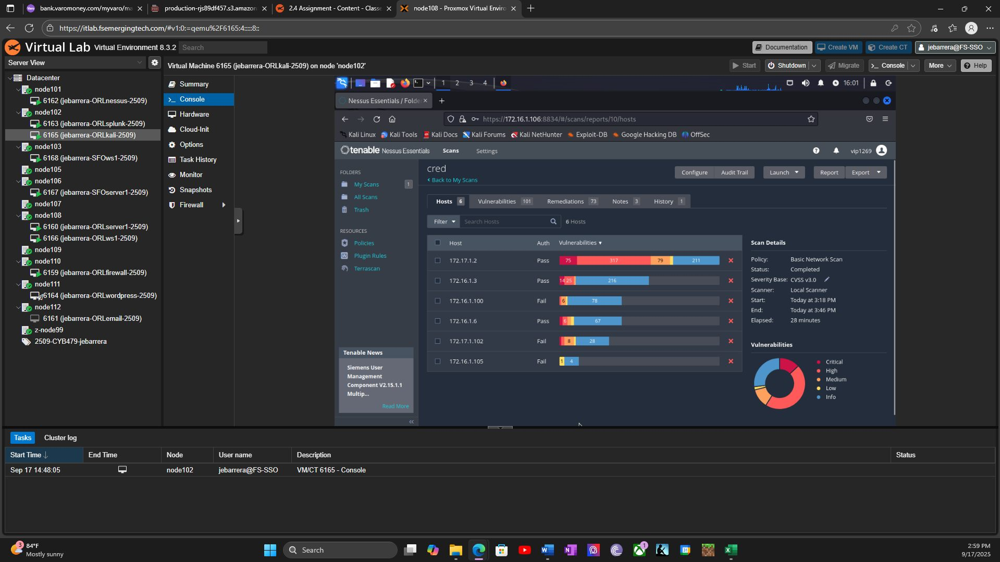

A step-by-step walkthrough of finding security weaknesses on a small network with a scanning tool, prioritizing what's most dangerous, and tracking the fixes. Click any screenshot to view it full-size.
NessusKali LinuxProxmoxCVSS triageTicket tracking
What's a vulnerability scan? It's an automated tool that checks every computer on a network for known weaknesses — missing security updates, risky settings, outdated software — the same way a home inspector checks a house for problems before you buy it. The tool used here, Nessus, produces a report ranking each weakness by how dangerous it is.
Step 1
Built a Proxmox virtual lab with a Nessus scanner, a Kali Linux attack workstation, and several target VMs to scan against.
Real vulnerability work starts with a controlled environment — you need a scanner, a way to reach the targets, and enough variety in the lab to produce meaningful findings. This setup mirrors how security teams run Nessus against internal servers without touching production.

What you're looking at: the Proxmox hypervisor listing every VM in the lab — including the Nessus scanner, Kali Linux workstation, Splunk server, WordPress site, email server, and firewall. Each row is a separate virtual computer on the same isolated network, ready to be scanned in the steps that follow.Step 2
Ran an initial scan just to see which computers were turned on and reachable.
Before checking for specific weaknesses, the first move is figuring out what's actually on the network — you can't secure a computer you don't know exists. This "discovery" scan also lists which network doors ("ports") each computer has open, which hints at what software is running.

What you're looking at: the scanning tool (Nessus) running inside a Kali Linux computer — Kali is a version of Linux built specifically for security testing. The table lists five target computers by their network address, along with the ports each one has open. No "vulnerabilities" are graded yet — this step is just mapping out what exists before digging deeper.Step 3
Ran a "non-credentialed" scan — checking each computer from the outside, the same way an attacker without a login would see it.
This scan doesn't get a username or password for the target computers — it can only see what's visible from the network, like knocking on doors and windows from outside a house. That's useful, but it misses anything hidden behind a locked door.

What you're looking at: a completed scan named no-cred. Every computer in the "Auth" column shows Fail — meaning the scanner never got past the front door with a login, exactly as expected for this type of scan. It still found real issues (the colored bars show how many Critical/High/Medium findings per computer), but as Step 4 shows, this is only part of the picture.Step 4
Ran a second, "credentialed" scan on the same computers — this time logging in with a valid username and password first.
Logging in first lets the scanner look inside the computer — installed programs, missing patches, misconfigured settings — instead of only seeing the outside. This is the scan that finds the issues a real attacker would find after breaking in, which is why organizations shouldn't rely on outside-only scanning alone.

What you're looking at: the same five computers, scanned again as cred. Several now show Pass in the Auth column — the scanner successfully logged in. Compare the vulnerability bar for 172.17.1.2 here to the same computer in Step 3: it's dramatically longer, because logging in revealed far more problems than the outside-only scan ever could.Step 5
Sorted every finding by how severe it was, and logged the most dangerous ones as tickets to track until fixed.
A scan is only useful if someone acts on it. Findings get ranked using a standard scoring system (CVSS) from Low up to Critical, and the worst ones get fixed first. Each ticket records which computer has the problem, how severe it is, who owns fixing it, and by when — the same tracking format used in real IT and security teams.
Applied the highest-priority fixes and documented the remediation action for each closed ticket.
In production, teams re-run the scan after patching to confirm the risk is gone. This lab tracked remediation through the ticket log above — each resolved row records what changed (disabling SMBv1, updating OpenSSL, restricting remote desktop access, applying Windows updates). That's the same handoff a help desk or sysadmin would use to show work was completed, even when a follow-up scan isn't captured in the portfolio.
Where this lab came from
Full Sail University — Project and Portfolio VII: Cybersecurity, Week 2 lab assignment. This is private coursework and isn't published publicly; the screenshots above are the actual scan results submitted for grading.